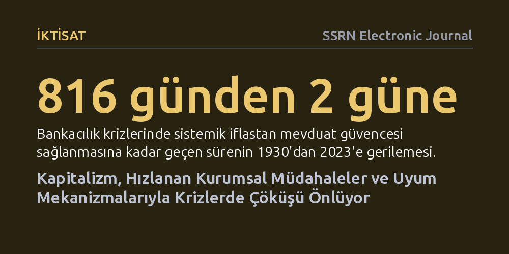

IKTISAT · SSRN Electronic Journal · 2026-10-13
Çalışma, kapitalizmin 1848'den bu yana öngörülen nihai çöküşünün neden gerçekleşmediğini matematiksel ve davranışsal iktisat modelleriyle araştırıyor. Krizlere müdahale sürelerinin geometrik olarak kısaldığı, devrimci pencerelerin psikolojik uyumla 4 ila 9 yılda kapandığı ve yeniden dağıtımın çöküşü engellediği saptanıyor.
Kapitalizmin krizlerle kaçınılmaz olarak çökeceği beklentisinin aksine, sistemin kurumsal refleksler, psikolojik alışma ve esnek yeniden dağıtımla kendini sürekli onarabildiğini gösteriyor.

1848 yılından bu yana iktisatçılar ve siyaset teorisyenleri, kapitalizmin kaçınılmaz bir nihai krizle çökeceğini öngördü. Büyük Buhran'dan 2008 küresel finans krizine kadar yaşanan her büyük sarsıntı, sistemin sonunun geldiği iddialarını yeniden alevlendirdi. Ne var ki aradan geçen 175 yıla rağmen beklenen nihai çöküş hiçbir zaman gerçekleşmedi. Aksine kapitalizm, her büyük krizin ardından yapısal olarak ayakta kalmayı başardı.
Bu çalışma, söz konusu 175 yıllık yanılgıyı basit bir tesadüf olarak geçiştirmek yerine, açıklanması gereken temel bir bilimsel olgu olarak ele alıyor. Sistemin krizleri nasıl atlattığını anlamak, hem tarihsel döngüleri aydınlatmak hem de günümüzdeki derin ekonomik çalkantıların ve gelir adaletsizliklerinin sistemi devirip deviremeyeceğini rasyonel temellere oturtmak açısından büyük önem taşıyor.
Araştırma, bu dayanıklılığı tek bir iktisat ekolüne sığınmadan, birden fazla disiplini bir araya getiren analitik bir modelle inceliyor. Çalışmada uyarlanabilir sistemler, mekanizma tasarımı, hesaplama karmaşıklığı, davranışsal karar teorisi, küresel oyunlar ve yeniden dağıtımın politik iktisadı tek bir çatı altında birleştiriliyor.
Araştırmacı, kurduğu sistemde on temel varsayımdan yola çıkarak on iki biçimsel matematiksel sonuç ve bir ana teorem geliştiriyor. Laboratuvar deneyi yerine teorik modelleme yöntemini seçen çalışma; vardığı sonuçları 1930'lardan günümüze bankacılık krizleri, mevduat garanti süreleri ve uluslararası Gini gelir dağılımı verileriyle kalibre ederek test edilebilir bir zemine kavuşturuyor.
Modelin ortaya koyduğu en somut bulgulardan biri, tekrarlayan şoklara karşı sistemik çöküş riskinin geometrik olarak azaldığını göstermesidir. Bankacılık krizleri incelendiğinde, sistemik bir iflastan devletin tüm mevduatları garanti altına aldığı kurtarma kalkanına geçiş süresi 1930-1933 Büyük Buhran döneminde 816 gün sürmüşken, 2008 krizinde 18 güne, 2023 bankacılık sarsıntısında ise yalnızca 2 güne inmiştir. Bu durum, sistemin önceki krizlerden ders çıkararak savunma reflekslerini katlanarak hızlandırdığını kanıtlıyor.
Bir diğer kilit sonuç ise toplumsal isyanların ömrüyle ilgilidir. Model, Davies'in J eğrisi kuramını kümülatif beklenti teorisiyle birleştirerek devrimci fırsat penceresinin kendiliğinden kapandığını ortaya koyuyor. İnsanların değişen olumsuz koşullara zamanla alışması (hedonik uyum) nedeniyle kitlesel öfke ve eyleme geçme iştahı yaklaşık 4 ila 9 yıl içinde sönümleniyor. Ayrıca kişiselleştirilmiş medya akışları, kolektif protestoları matematiksel olarak 'saldırısızlık dengesi'ne sürükleyerek kitlesel kalkışmaları sınırlandırıyor.
Araştırma, kapitalizmin merkezi planlamayla ikame edilmesinin önündeki engelleri de hesaplama karmaşıklığı çerçevesinde değerlendiriyor. Fiyat mekanizmasını merkezi bir algoritmayla değiştirme çabaları, ya algoritmaların baş edemeyeceği muazzam hesaplama yüküne ya da aktörlerin doğru bilgi vermemesi sorununa takılıyor. Buna karşılık kapitalizm, gelir eşitsizliğine karşı yeniden dağıtım mekanizmasını esnek bir ayar düğmesi gibi kullanabiliyor. Örneğin piyasa Gini katsayısı 0,505 ile 0,512 gibi yüksek eşitsizlik düzeyinde olan ülkeler, vergi ve transfer politikalarıyla harcanabilir Gini seviyesini 0,273 ile 0,395 arasına çekerek toplumsal patlamaları önleyebiliyor.
Sonuç olarak makale, kapitalizmin ölümsüz olduğunu iddia etmiyor; ancak sistemin neden çökmediğini kurumsal öğrenme hızı, insan psikolojisinin uyum yeteneği ve esnek yeniden dağıtım araçlarıyla modelliyor. Modelin geçerliliği, yazarın ortaya koyduğu yedi test edilebilir öngörü ve altı yanlışlanabilirlik koşulunun gelecekteki ampirik verilerle sınanmasına bağlı bulunuyor.